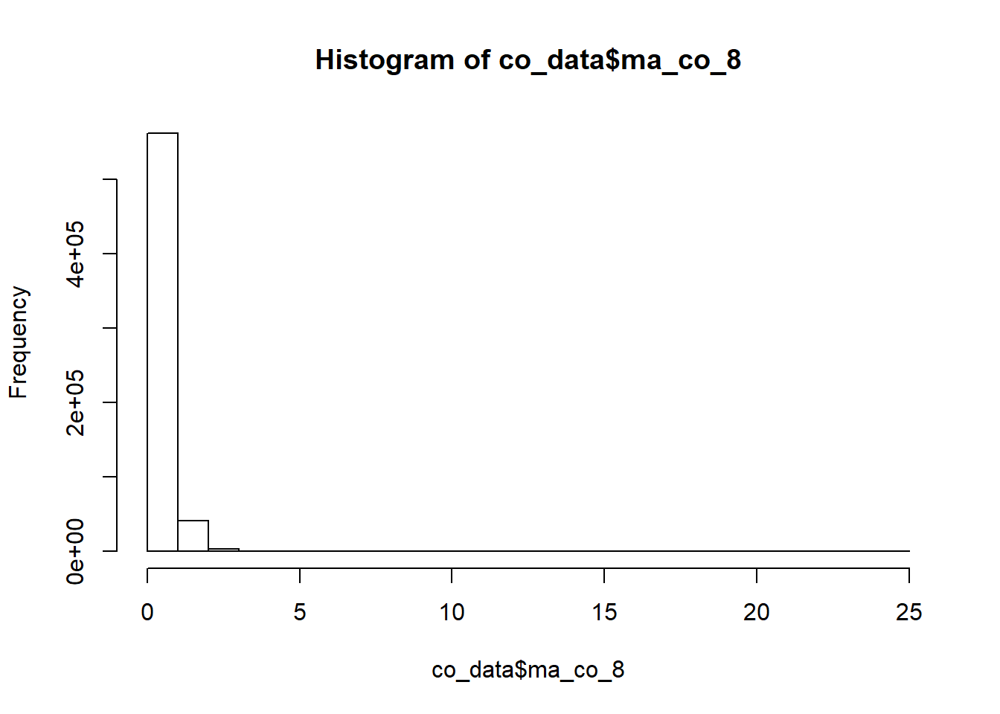
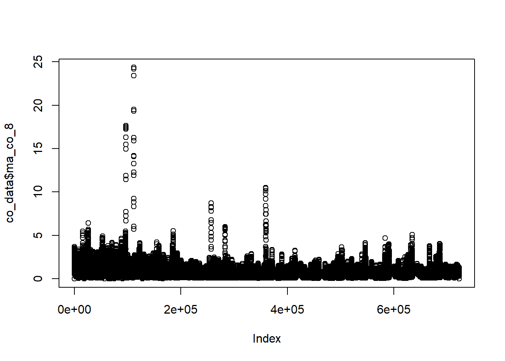

10 Tables preparation for Tableau Dashboards
First of all we export the whole table to a csv file. I am not saving this file in the “data_final_csvs” folder because it exceeds the Github file limit size (100mb)(pendiente exportar a google drive)
I save the air_data_2.csv outside the project diretory because it exceeds the 100mb github limit.
# write_csv(air_data_2,"C:/Users/SErgio/OneDrive/00_master_data_science/TFM/air_data_2.csv")10.0.1 CO tables
We create a CO dataset with CO Moving averages (each 8 hours). It is needed to measure the acompplishment of UE #limits for this pollutant
co_data <- air_data_2 %>% select(station_alias, date_time_utc, CO) %>%
mutate(ma_co_8 = roll_mean(CO, 8, fill=0))
hist(co_data$ma_co_8)
summary(co_data$ma_co_8)## Min. 1st Qu. Median Mean 3rd Qu. Max. NA's
## 0.00 0.26 0.40 0.49 0.62 24.34 107719plot(co_data$ma_co_8)
# pending na treatment
saveRDS(co_data, file = "data_rds/co_data.rds")
write_csv(co_data, "data_final_csvs/co_data.csv")10.0.2 SO2 tables
RD 102/2011 Hourly limit: 350 ug/m3 (1 hour). <= 24 times / year. Daily limit: 125 ug/m3 (24 hours). <= 3 times / year. Alert threshold: 500 ug/m3 (3 hours).
so2_data <- air_data_2 %>% select(station_alias, date_time_utc, SO2)
saveRDS(so2_data, file = "data_rds/so2_data.rds")
write_csv(so2_data, "data_final_csvs/so2_data.csv")
# How many times was the Hourly limit exceeded during the last 18 years?
so2_hourly_limit <- so2_data %>%
group_by(station_alias,
year = year(date_time_utc),
day = date(date_time_utc)) %>%
filter(SO2 > 350) %>%
summarise(n = n()) %>%
arrange(year)
so2_hourly_limit## # A tibble: 13 x 4
## # Groups: station_alias, year [8]
## station_alias year day n
## <fct> <dbl> <date> <int>
## 1 Castilla 2001 2001-10-20 2
## 2 H. Felgueroso 2001 2001-10-20 2
## 3 Argentina 2004 2004-01-27 2
## 4 Argentina 2004 2004-01-28 12
## 5 Argentina 2008 2008-09-25 1
## 6 Argentina 2008 2008-11-27 1
## 7 Castilla 2008 2008-11-17 1
## 8 Castilla 2008 2008-12-25 4
## 9 Castilla 2008 2008-12-26 7
## 10 Castilla 2009 2009-01-05 1
## 11 Castilla 2011 2011-06-07 6
## 12 Castilla 2011 2011-06-08 1
## 13 Constitución 2011 2011-01-13 3saveRDS(so2_hourly_limit, file = "data_rds/so2_hourly_limit.rds")
write_csv(so2_hourly_limit, "data_final_csvs/so2_hourly_limit.csv")
# How many times was the Daily limit exceeded during the last 18 years?
so2_daily_limit <- so2_data %>%
group_by(station_alias, date = date(date_time_utc), year = year(date_time_utc)) %>%
summarise(avg = mean(SO2, na.rm = TRUE)) %>%
ungroup %>%
filter(avg > 125) %>%
group_by(station_alias, year, date) %>%
summarise(n = n()) %>%
arrange(year)
so2_daily_limit## # A tibble: 6 x 4
## # Groups: station_alias, year [3]
## station_alias year date n
## <fct> <dbl> <date> <int>
## 1 Argentina 2004 2004-01-28 1
## 2 Castilla 2008 2008-11-17 1
## 3 Castilla 2008 2008-12-25 1
## 4 Castilla 2008 2008-12-26 1
## 5 Castilla 2011 2011-06-07 1
## 6 Castilla 2011 2011-06-08 1saveRDS(so2_daily_limit, file = "data_rds/so2_daily_limit.rds")
write_csv(so2_daily_limit, "data_final_csvs/so2_daily_limit.csv")